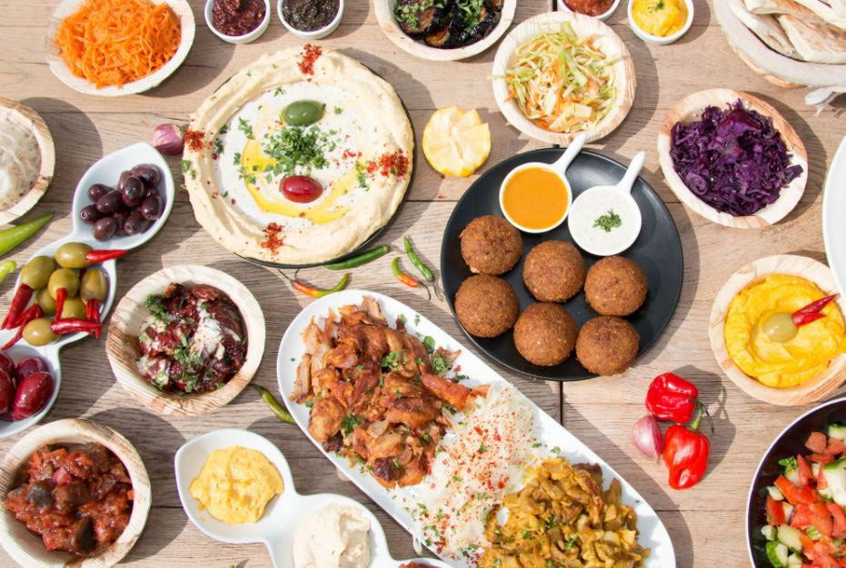

América Latina

Platos típicos:
- Tacos del Sol
- Empanadas Picantes
- Ají Dorado
Enlace a recetas oficiales
Asia del Sur
Platos típicos:
- Curry Escarlata
- Arroz del Dragón
- Sopa de Chile Negro
Enlace a recetas oficiales
África
Platos típicos:
- Estofado Volcán
- Pollo de la Sabana
- Salsa León Rojo
Enlace a recetas oficiales
Europa Mediterránea

Platos típicos:
- Pasta Brisa
- Paella Suave
- Salsa Solar